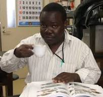

Meet Our Team
The LMSP-Tanzania team brings together diverse expertise in marine spatial planning, data management, policy development, and coastal governance.

Siajali Pamba, PhD
Affiliation: School of Aquatic Sciences and Fisheries Technology (SOAF)
Dr. Pamba leads the Marine Spatial Planning Initiative as institutional lead at SOAF. He specializes in spatial pattern analysis and biodiversity assessment, developing and applying advanced geospatial methods to characterize marine ecosystem diversity and conservation priorities. Her research contributes to evidence-based marine governance in the Indian Ocean region.
Links:
- Google Scholar
- ORCID
- SOAF Profile
- Email: siajali.pamba@udsm.ac.tz

Masumbuko Semba, PhD
Affiliation: Nelson Mandela African Institution of Science and Technology (NM-AIST)
Dr. Semba leads data analysis, statistical modeling, and interactive graphics development for the Marine Spatial Planning Initiative. His expertise spans spatial and statistical analysis, automation of analytical workflows, and full-stack development of interactive visualization platforms using modern programming frameworks.
Links:
- Google Scholar
- ORCID
- GitHub
- NM-AIST Profile
- Email: masumbuko.semba@nm-aist.ac.tz

Julius Francis, PhD
Affiliation: School of Aquatic Sciences and Fisheries Technology (SOAF)
Dr. Julius develops policy recommendations and governance frameworks for sustainable marine resource management. He coordinates ecosystem services assessment and ensures that spatial planning outputs inform evidence-based coastal policy development at district and national levels. His work strengthens the link between scientific research and policy implementation.
Links:
- Google Scholar
- ORCID
- SOAF Profile
- Email: julius.francis@udsm.ac.tz

Emmanuel Mpina, MSc
Affiliation: The Nature Conservancy, Tanzania
Emmanuel develops the digital visualization platform and conducts bio-economic cost-benefit analysis. He bridges technical analysis with stakeholder communication through interactive mapping tools and decision support systems. His expertise in data visualization enables diverse stakeholders to understand and act on complex marine spatial planning outcomes.
Links:
- The Nature Conservancy - Tanzania
- ORCID
- Email: empina@tnc.org

Samson Job, MSc
Affiliation: School of Aquatic Sciences and Fisheries Technology (SOAF)
Mr. Samson coordinates all field activities and logistics for the Marine Spatial Planning Initiative. He manages survey equipment, organizes fieldwork schedules, coordinates with local communities and fishing associations, and ensures smooth implementation of data collection protocols. His experience in coastal fieldwork and community engagement is essential for successful ground-truthing of satellite data and stakeholder involvement.
Links:
- SOAF Profile
- ORCID
- Email: samson.job@udsm.ac.tz

Gervas Maro, BSc
Affiliation: School of Aquatic Sciences and Fisheries Technology (SOAF)
Mr. Gervas conducts socio-economic assessments and livelihood analysis for the communities in Mkoani and Mkuranga districts. He documents fishing practices, income sources, and community priorities, ensuring that marine spatial planning outcomes address local livelihood needs and support sustainable resource management. His work bridges ecological science and human wellbeing, making spatial plans locally relevant and socially acceptable.
Links:
- SOAF Profile
- ORCID
- Email: gervas.maro@udsm.ac.tz

Rushingisha George, PhD
Affiliation: Tanzania Fisheries Research Institute (TAFIRI)
Rushingisha leads research and spatial analysis to support evidence-based LMSP planning. He conducts advanced spatial analysis, research methodology development, and impact assessment studies. His expertise bridges analytical science and practical marine planning applications, ensuring that data-driven insights inform strategic decision-making at all levels of governance.
Links:
- TAFIRI Profile
- ORCID
- Email: rushingisha.george@tafiri.go.tz
Idrissa Hamad, PhD
Affiliation: State University of Zanzibar (SUZA)
Idrissa coordinates LMSP activities across different regions and ensures consistency in implementation. He manages multi-level governance processes, facilitates stakeholder coordination, and oversees project integration across district and regional levels. His experience in governance frameworks ensures alignment between local action and national marine policy objectives.
Links:
- SUZA Profile
- ORCID
- Email: idrissa.hamad@suza.ac.tz
John Mapunda, PhD
Affiliation: Tanzania Fishing Company (TAFICO)
John develops spatial databases and advanced mapping tools to support LMSP visualization and analysis. He designs GIS infrastructure, creates cartographic products, and manages spatial data systems that enable stakeholders to explore and understand marine spatial planning outcomes. His technical expertise makes complex spatial information accessible to diverse audiences.
Links:
- TAFICO Profile
- ORCID
- Email: john.mapunda@tafico.co.tz

Limbu Mchele, Prof
Affiliation: School of Aquatic Sciences and Fisheries Technology (SOAF)
Limbu designs and implements comprehensive monitoring systems to track LMSP progress and environmental outcomes. He develops performance indicators, manages adaptive management protocols, and evaluates the effectiveness of marine spatial planning interventions. His work ensures that LMSP adjusts strategies based on evolving ecological and socioeconomic conditions.
Links:
- SOAF Profile
- ORCID
- Email: limbu.mchele@udsm.ac.tz

Rose Mwaipopo, PhD
Affiliation: Department of Gender Studies, University of Dar es Salaam
Rose ensures LMSP processes are inclusive and responsive to diverse social groups and gender considerations. She conducts gender analysis, designs inclusive engagement strategies, and evaluates equity outcomes in resource access and decision-making. Her work ensures that marine spatial planning benefits all community members and strengthens gender-responsive governance.
Links:
- Google Scholar
- ORCID
- UDSM Profile
- Email: rose.mwaipopo@udsm.ac.tz

John Komakoma, MSc
Affiliation: The Nature Conservancy
John manages strategic communication and outreach activities to build awareness and political support for LMSP. He develops communication strategies, manages stakeholder engagement campaigns, and ensures knowledge dissemination through diverse media channels. His expertise in strategic communications amplifies the impact of LMSP research and facilitates public dialogue on marine conservation.
Links:
- The Nature Conservancy - Tanzania
- ORCID
- Email: john.komakoma@tnc.org
Team Expertise Overview
| Domain | Key Focus Areas | Team Members |
|---|---|---|
| Marine Spatial Planning | MSP strategy, coordination, implementation | Julius Francis, Emmanuel Mpina |
| Data & Information | Data management, GIS, analysis, monitoring | Masumbuko Semba, John Mapunda, Rushingisha George |
| Policy & Governance | Policy development, institutional coordination, regional integration | Siajali Pamba, Idrissa Hamad |
| Sectoral Expertise | Fisheries, conservation, livelihoods | Samson Job, Gervas Maro |
| Process Support | Engagement, M&E, gender/inclusion, communications | Limbu Mchele, Rose Mwaipopo, John Komakoma |
Collaboration & Contact
Our team works collaboratively to achieve LMSP goals.
For inquiries related to:
- MSP Strategy: lmsp.tanzania@example.com
- Data & Information: data@lmsp-tanzania.example.com
- Policy Support: policy@lmsp-tanzania.example.com
- General Inquiries: lmsp.tanzania@example.com
Last Updated: January 1, 2026